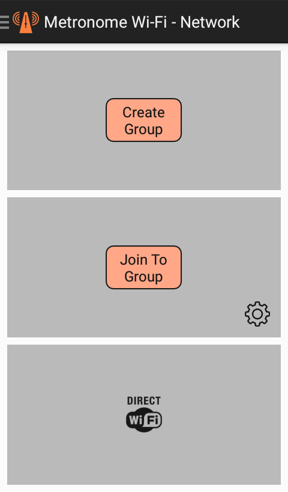
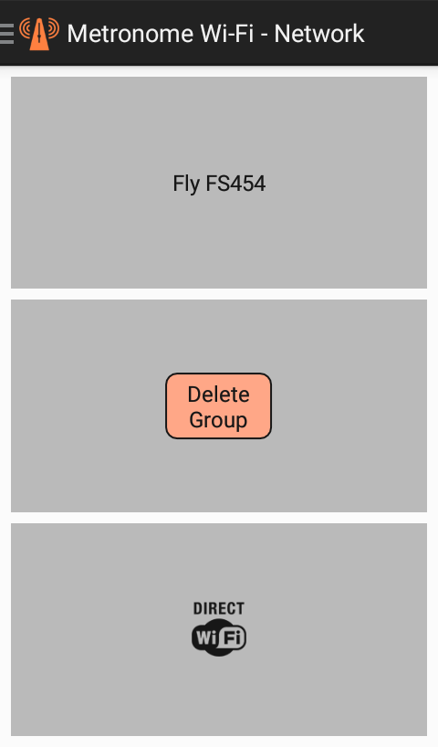
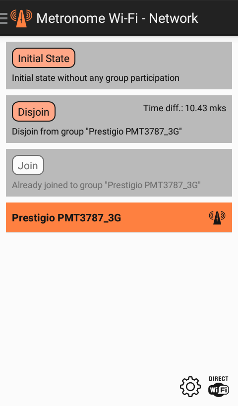
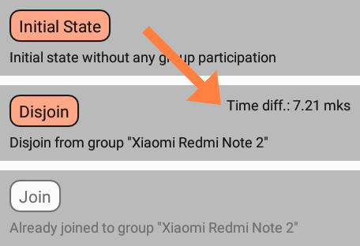

In networking, one of the devices creates a group and is its owner, while other devices join this group. On all devices of the group, the rhythm set by the group owner sounds. If a member of the group, who is not the owner of it, starts his metronome or plays the rhythm in his editor, he will automatically disjoin from the group.

To create a group, click the "Create Group" button and enter the name of the group in the dialog box that appears.

To join to group, click the "Join To Group" button and wait until at least one group is found. After that you will see a screen with a list of detected groups. Select the desired group and click the "Join" button. The "Disjoin" button causes disjoint, the screen does not change. The "Initial State" button leads to a return to the previous screen. In this case, if the device is in any group, a disjoint occurs.

After joining the group, synchronization is performed, the results of which are displayed on the screen:

The total time difference is made up of this value and the difference in delays in sound reproduction, depending on the specific device. To keep this difference to a minimum, its adjusting is provided in the app.
|
|
Network Settings |
| This button displays a dialog box with network settings. They allow you to set the type of sound when playing a rhythm received over the network and the type of synchronization. | |
Wireless Settings |
|
| This button shows Android settings to allow configuration of wireless controls such as Wi-Fi, Bluetooth and Mobile networks. |